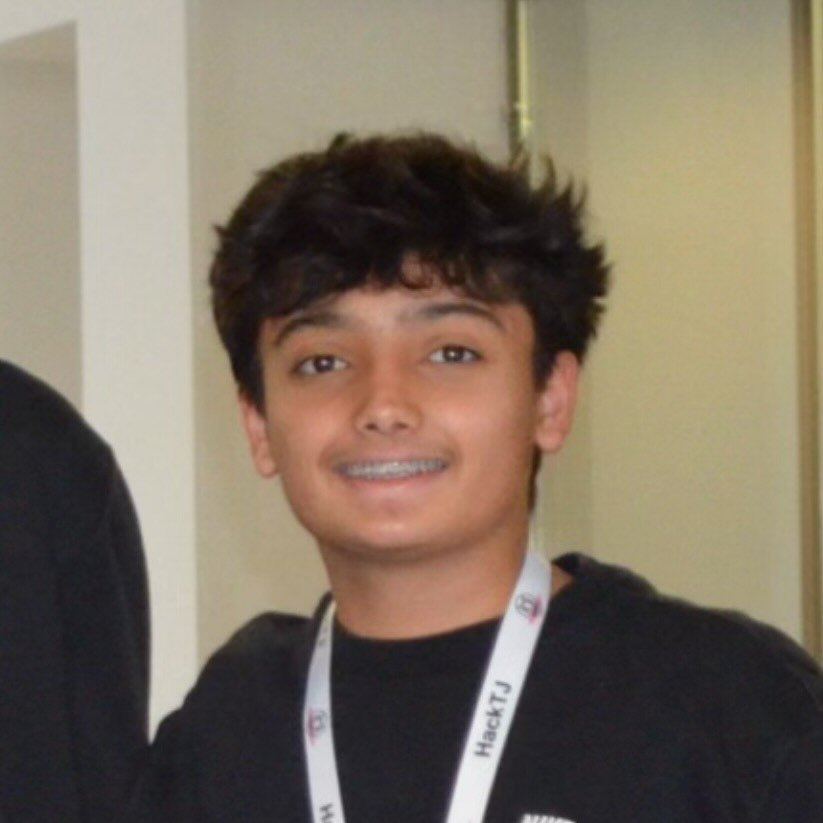

orit
an autonomous company that simulates product performance in the market, built for ecommerce and local companies. won best use of exa at the zero human company hackathon in nyc.

15, building intelligence
i'm a sophomore in high school interested in machine learning, especially how models represent their surroundings and predict what might happen next.
an autonomous company that simulates product performance in the market, built for ecommerce and local companies. won best use of exa at the zero human company hackathon in nyc.
a multi-agent system converting natural language and computer vision into real-world computer actions. won best use of gcp at tillyhacks.
a hospital bill auditing app built at hacktj, where it won best mobile hack. it accepts photos and pdfs, extracts medical codes and prices, checks them against cms data using rag, flags suspicious charges, and drafts a dispute letter.
a small language model written from scratch in numpy to generate pokémon names. i implemented the forward and backward passes without ml frameworks to learn about weight initialization, activation stability, and gradient flow.
zero human company hackathon nyc · issued by terac
built orit, a fully autonomous company that simulates product performance in the market.
tillyhacks · issued by tillyhacks
built felix, a multi-agent system for real-world computer actions.
hacktj · issued by hacktj
built fern.ai, an ai hospital bill auditor.
i want to keep learning by: